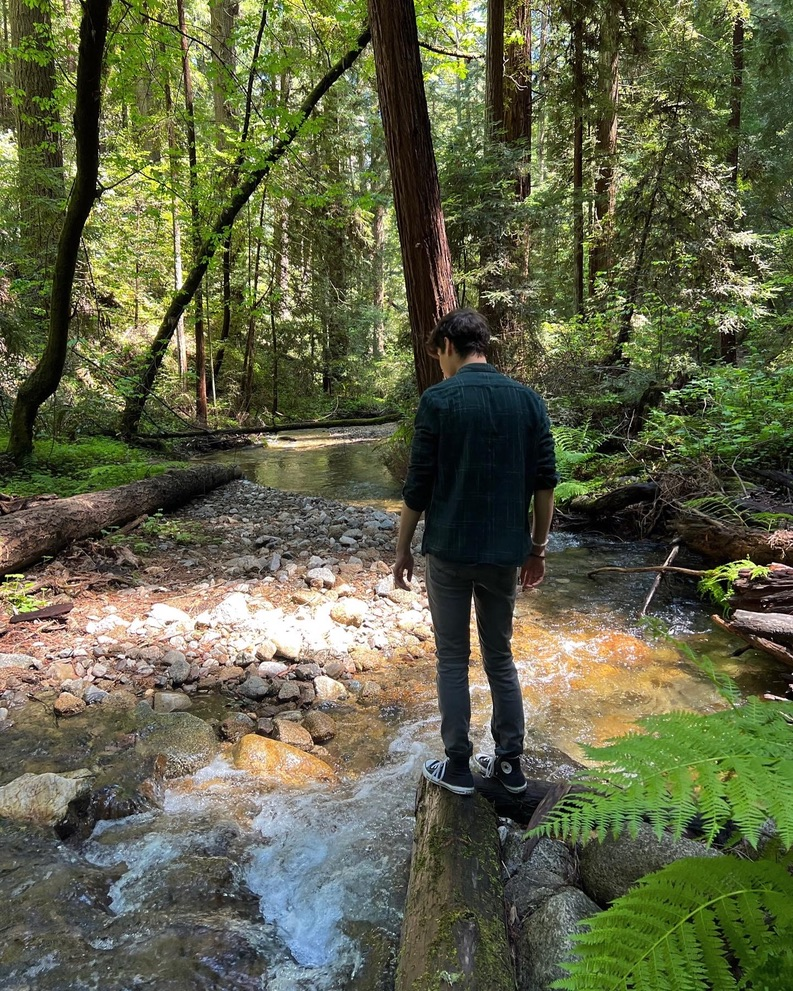
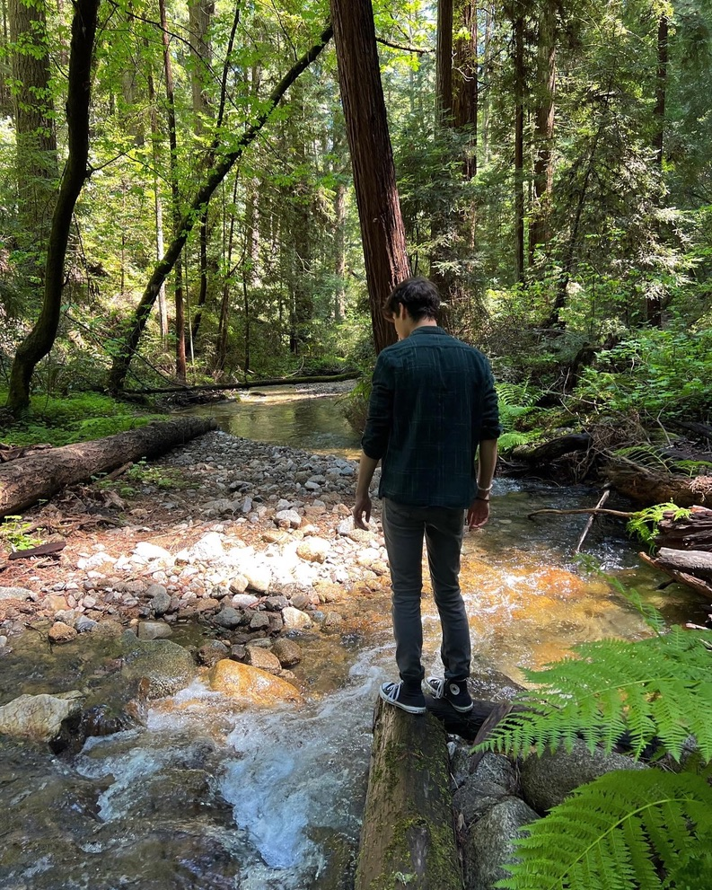

Nature Walks
 


Jose absolutely loves going for nature walks. It's his thing, you know? He's just crazy about it. When he's out there in the woods or by a quiet stream, he's in his element. The way he talks about it, you'd think he's got a secret language with the trees and birds. For Jose, nature is like a best friend – always there, always comforting. He's all about those early morning sunrises and those lazy afternoons under the shade of a big tree. It's where he feels most at home, where he can forget about everything else, and just be himself, soaking in the beauty of the world around him.